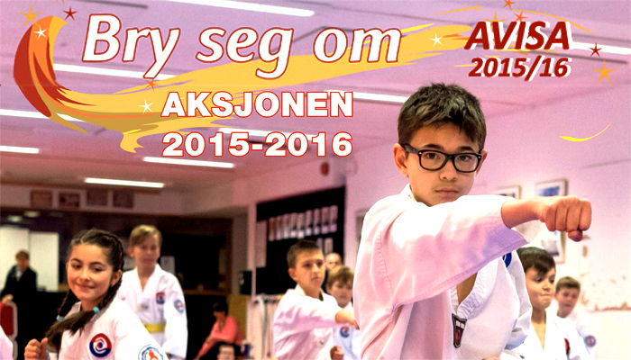
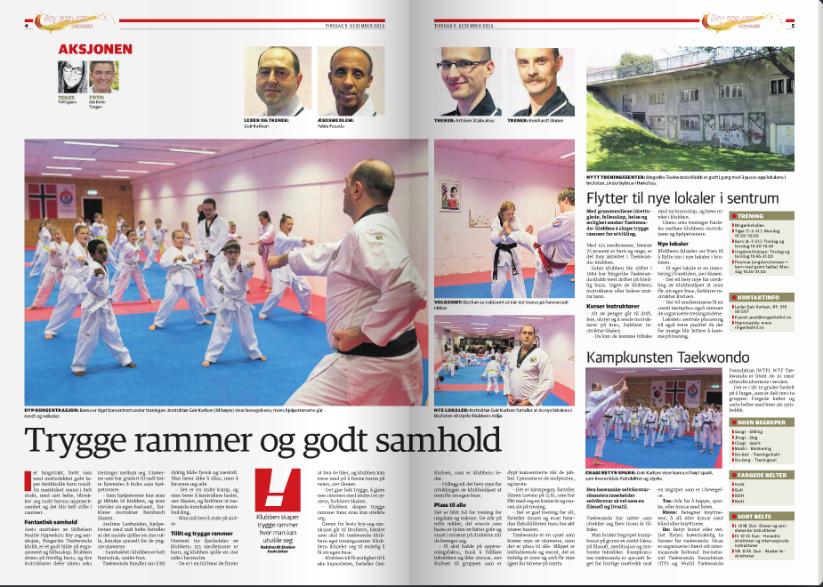
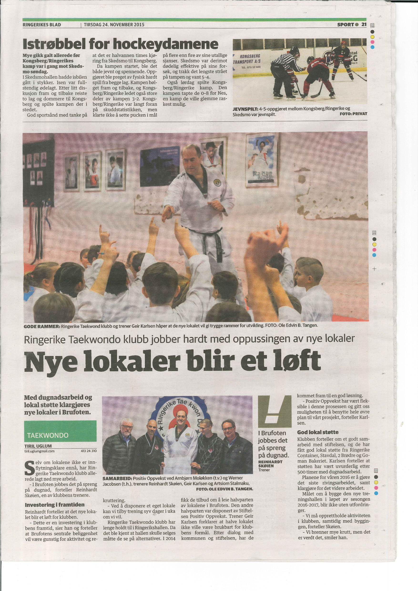

Innlegg
Bry seg om-aksjonen

Ringerike TKD er årets mottaker av "Bry seg om"-aksjonen.
Bry seg om-aksjonen er et årlig tiltak, arrangert av Stiftelsen Positiv Oppvekst, som hvert år trekker frem gode tilbud til barn og unge i distriktet. I år er det Ringerike TKD-klubb som er valgt, spesielt med fokus på vårt prosjekt, nytt treningslokale i Nordre Brukar.
For å få realisert vår drøm er vi avhengige av støtte, særlig økonomisk.
Derfor er det opprettet en prosjektkonto med kontonr. 2280.37.88344, hvor vi ønsker all støtte hjertelig velkommen, ingen bidrag er for små!
Trykk på faksimilen til venstre for å lese saken i Bry seg om-avisen, eller trykk på den høyre for å lese en artikkel i Ringerikes blad om oppussingsprosjektet vårt.

